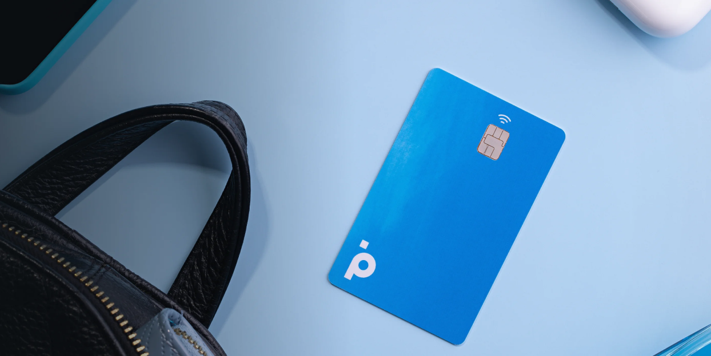

Durante o ultimo ano tive a chance de trabalhar em uma agencia com grande nome em São Paulo, onde nela eu tinha como cliente o Banco PAN, antigo Banco Panamericano.
Acredito e até posso falar com muita certeza, que foi um periodo onde eu realmente tive chance de me conectar com diferentes aréas, muito mais do que em outros trabalhos. Não somente pela autonomia que me foi dada, mas tambem por estar dentro do banco de forma ativa, propondo e discutindo diferentes produtos com diversos niveis de hierarquia que lá tem.
Dentro do periodo nos foi dado diferentes tipo de missões, dentre elas atualizar o site para todo o Reabranding aprovado no banco, antes de eu entrar. Durante os meses ficamos encarregados de criar as novas páginas do banco e atualizar todas que já existiam para o novo Design System, um Design System primeiramente criado por eles e em seguida atualizado por nós com diversas outras necessecidades que foram surgindo durante o Reabranding. O próximo desafio seria criar um novo layout para o blog do banco. Começamos a realizar benchmarking com a concorrencia para entender como outros bancos trabalhavam seu blog, por a ver pouca complexidade no decorrer da navegação preferimos focar em formas que o conteudo do blog possa ser engajado de forma organica no google. E aqui esta o resultado: https://www.bancopan.com.br/blog.
Logo em seguida a ideia era, criar uma nova home page para o Banco, algo que não tivemos muitas dificuldades, pois era algo que eu já vinha mapeando e analisando do banco com outras marcas. Então a ideia foi somente modernizar componentes do DS e deixar a mais fluida. Não tenho numeros dos resultados somente as duas telas para usar de comparação https://bancopan.com.br/ X https://bancopan.com.br/home-d
Nosso proximo desafio foi criar um novo Shopping no APP do Banco, esse desafio tive ao meu lado um CX e uauu como as coisas fluiam, as trocas, as interações e microinterações tudo fazia sentido. A ideia como antes, era começar por um benchmarking, com o diferencial que não iamos vender produtos dentro do app e sim direcionar o usuario para parceiro, assim como funciona o Zoom e Buscapé. E em um mês o Shopping estava pronto com a aprovação de todos os diretores do banco.
E no decorrer do tempo novos desafios e propostas foram aparecendo. Como criação de simuladores para páginas de emprestimo, criação de captação de lead.
O problema maior é que infelizmente não vou poder compartilhar telas e informações, pois sao informações que são do banco e ficou tudo no computador deles. O que quero trazer aqui são minhas historias e casos reais que vivi no dia a dia, numa troca que acredito que seja interessante para ambos.
This is a wider card with supporting text below as a natural lead-in to additional content. This content is a little bit longer.
This is a wider card with supporting text below as a natural lead-in to additional content. This content is a little bit longer.